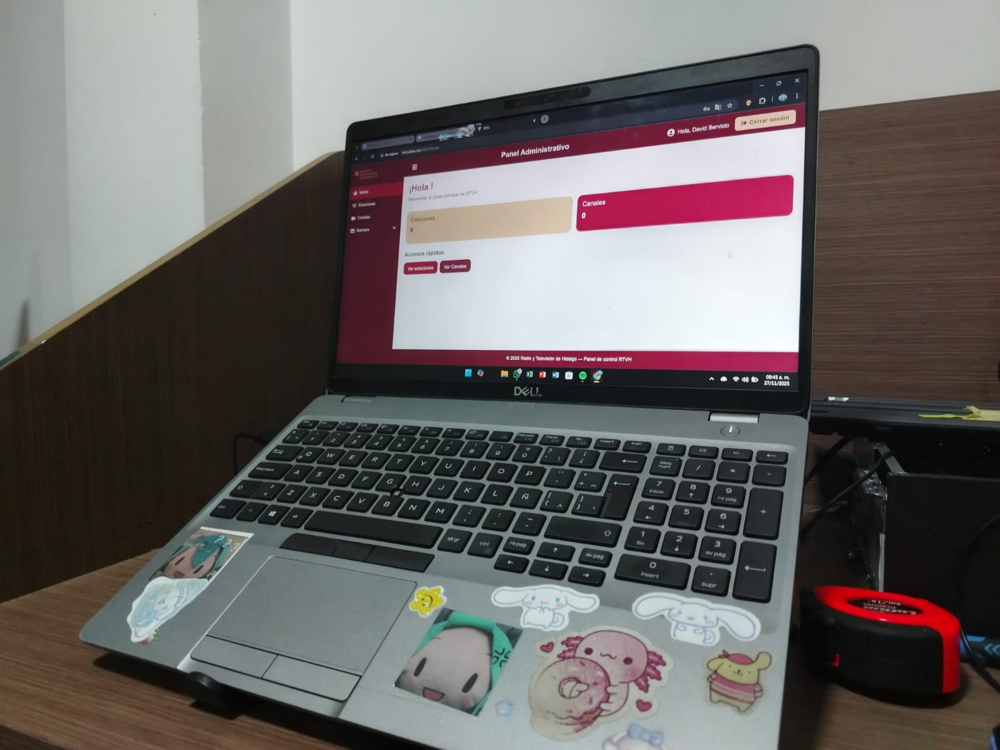

💻 El área de Informática

Además de mi estancia principal en Recursos Humanos, también tuve la oportunidad de conocer el área de Informática dentro de Radio y Televisión de Hidalgo, específicamente el área de mantenimiento preventivo de equipos de cómputo.
Esta área es fundamental para asegurar el correcto funcionamiento de todos los equipos tecnológicos de la institución, garantizando que el personal pueda realizar su trabajo sin interrupciones. 🌸
🔧 ¿Cómo funciona el área?
Cuando un trabajador reporta un problema con su equipo, el proceso inicia con una revisión detallada por parte del personal técnico del área.
El mantenimiento preventivo tiene como propósito evitar fallas mayores, mejorar el rendimiento de los equipos y prolongar su vida útil, asegurando así la continuidad de las actividades de la institución.
Problemas menores
Si el problema es menor, como fallos de software, lentitud, problemas con periféricos o ajustes simples, se soluciona directamente en el momento por el personal técnico del área.
Problemas complejos
En caso de que el problema sea más complejo, como fallas internas de hardware, daños en componentes o situaciones que requieran herramientas especializadas, se informa al ingeniero encargado, quien es el jefe directo del área.
Decisión del ingeniero
El ingeniero evalúa si el equipo debe enviarse al área correspondiente para una revisión profunda, o si él personalmente se hará cargo del diagnóstico y la reparación del equipo.
🌟 Lo que aprendí en esta área
Conocer el área de Informática me permitió entender la importancia del mantenimiento preventivo dentro de una institución pública, y cómo el trabajo técnico es esencial para que todas las demás áreas puedan funcionar correctamente.
Este proceso asegura que cada equipo reciba la atención adecuada según su falla, optimizando los recursos de la institución y garantizando la continuidad del trabajo diario. 💖